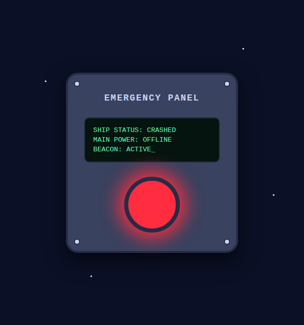

Commander, can you hear me? This is MARIA, your ship's onboard assistant. Please stay calm.
We crashed into the ocean of an unknown planet and the ship has sunk. We are resting on the seabed, deep under the surface. The hull is holding, for now.
Most of our systems are failing. I can still think, but the crash corrupted my repair routines, so I can't fix anything by myself. You will have to write the code. I will guide you, one system at a time.
Our first problem is right in front of you: the alarm. That red light has been blinking since we hit the water, and I can barely hear myself think. Let's shut it off.
What we will do today
In this class we will use HTML, CSS and JavaScript to recreate the ship's control panel with the alarm light on it. We will build the panel with HTML, style it with CSS, and then use JavaScript to make the light blink periodically.

Step 1: Create the files
Create a new folder called lesson01. Inside it, create three empty files:
index.html: what is on the page (the panel, the screen, the light).style.css: how it looks (colours, sizes, shapes).script.js: what it does (making the light blink).
Keeping these three apart is how most websites are built: one file for each job.
Step 2: Build the panel with HTML
2.1 Start from the boilerplate
Every HTML page starts with the same basic structure, called a
boilerplate. Open index.html and write:
<!DOCTYPE html>
<html lang="en">
<head>
<meta charset="UTF-8">
<meta name="viewport" content="width=device-width, initial-scale=1.0">
<title>Lesson 1: Emergency Light</title>
</head>
<body>
</body>
</html><!DOCTYPE html>tells the browser this is a modern HTML page.<html lang="en">wraps the whole page and says it is in English.-
<head>holds information about the page, which is not shown inside it: the character set (UTF-8supports every letter and emoji), theviewportline that makes the page fit phone screens, and the<title>shown on the browser tab. <body>holds everything you see on the page. It is empty for now.
Open index.html in your browser: the page is blank, but the tab shows
"Lesson 1: Emergency Light".
2.2 Add the panel
Now we fill in the page. We add two lines that connect our other files: a
<link> in the head for the CSS, and a <script>
at the end of the body for the JavaScript. Then, inside the body, we build the panel.
Read the comments: they explain what each piece is.
<!DOCTYPE html>
<html lang="en">
<head>
<meta charset="UTF-8">
<meta name="viewport" content="width=device-width, initial-scale=1.0">
<title>Lesson 1: Emergency Light</title>
<link rel="stylesheet" href="style.css">
</head>
<body>
<main class="panel">
<!-- The four screws holding the panel to the wall of the ship -->
<span class="screw top-left"></span>
<span class="screw top-right"></span>
<span class="screw bottom-left"></span>
<span class="screw bottom-right"></span>
<h1>Emergency Panel</h1>
<div class="screen">
<p>SHIP STATUS: CRASHED</p>
<p>MAIN POWER: OFFLINE</p>
<p>BEACON: ACTIVE<span class="cursor">_</span></p>
</div>
<!-- JavaScript adds and removes the class "on" to make this blink -->
<div id="light" class="light"></div>
</main>
<script src="script.js"></script>
</body>
</html>A few things to notice:
-
<link rel="stylesheet" href="style.css">connects the CSS file, and<script src="script.js">connects the JavaScript file. -
The
classattributes (panel,screw,screen,light) are names we will use in the CSS to style each part. -
The light also has an
id. An id is unique on the page, so JavaScript can use it to find exactly that element. -
The
<script>tag is at the end of the body, so the light already exists when the JavaScript runs.
Open index.html in your browser now. You will see plain text and
not much else: the page has content but no style yet.
Step 3: Style it with CSS
Now open style.css. We will write it in small pieces. After each
piece, save and refresh the browser to see what changed.
3.1 Name the colours
Colours we use more than once get a name, called a CSS variable. We can
then write var(--metal) instead of repeating #39425f everywhere.
/* Colours we use more than once get a name */
:root {
--space: #0b1026;
--metal: #39425f;
--metal-dark: #252c45;
--text: #c9d4f2;
--screen-green: #5dffb0;
--light-off: #4a1018;
--light-on: #ff2d3f;
}
* {
box-sizing: border-box;
}
What is :root? It selects the very top element of the
page, the <html> tag. Everything else on the page is inside it, and
CSS variables are passed down from an element to everything inside it. So variables
defined on :root can be used anywhere in our CSS. Variable names always
start with two dashes, like --metal.
Why * { box-sizing: border-box; }? The *
selector means "every element on the page". By default, when you give an element a
width, the browser adds the padding and the border on top of it.
For example, a box with this CSS:
width: 340px;
padding: 32px;
border: 4px solid;
would actually be 340 + 32 + 32 + 4 + 4 = 412 pixels wide. That is
confusing, and it often makes boxes overflow the screen. With
box-sizing: border-box, the padding and border are counted
inside the width, so the box is exactly 340 pixels wide, as we wrote.
Almost every website starts its CSS with this rule.
How do we use a variable? Write var() with the
variable's name inside, anywhere you would normally write the value:
:root {
--metal: #39425f;
}
.panel {
background-color: var(--metal); /* the same as writing #39425f */
}
.screw {
border: 2px solid var(--metal); /* works inside longer values too */
}
If we later want a different metal colour, we change it once in
:root and every place that uses var(--metal) updates.
Your turn
Before reading on, try to write the rest of the CSS yourself and get as close as you can to the image below. Use the colour variables from 3.1.
Some parts to work on:
- a dark blue page with the panel in the middle
- a grey metal panel with rounded corners and a shadow
- a screw in each corner
- a dark screen with green text
- a big round red light
It doesn't need to be perfect. When you are done, or if you get stuck, continue with the next steps and compare your solution with ours.
3.2 Deep space
The body becomes a dark blue sky with a few stars. display: flex with
justify-content and align-items puts the panel in the
middle of the screen.
/* The page: deep space with a few stars, and the panel in the middle */
body {
margin: 0;
min-height: 100vh;
padding: 16px;
display: flex;
justify-content: center;
align-items: center;
font-family: "Courier New", monospace;
color: var(--text);
background-color: var(--space);
background-image:
radial-gradient(circle at 15% 25%, white 1px, transparent 2px),
radial-gradient(circle at 80% 15%, white 1px, transparent 2px),
radial-gradient(circle at 65% 70%, white 1px, transparent 2px),
radial-gradient(circle at 30% 85%, white 1px, transparent 2px),
radial-gradient(circle at 90% 60%, white 1px, transparent 2px);
}
Why is it called background-image if there are no images?
background-image can show a picture file, like
url("stars.png"). But in CSS a gradient also counts as an image: it is a
picture that the browser paints by itself, without downloading any file. So it goes
in background-image, not in background-color.
We can also give background-image several images separated by commas.
They are stacked on top of each other, and here each one paints one star.
Let's read the first one:
radial-gradient(circle at 15% 25%, white 1px, transparent 2px)circle at 15% 25%: the centre is 15% from the left and 25% from the top of the page.white 1px: it is white for the first pixel from the centre.transparent 2px: by 2 pixels it fades to transparent, so the dark sky shows through.
The result is a tiny white dot: a star. The background-color is painted
underneath all the images, which is why the rest of the sky is dark blue.
Making your own gradients. A gradient is a smooth change from one colour to another. There are two main kinds:
/* In a straight line: red at the top, fading to blue at the bottom */
background-image: linear-gradient(red, blue);
/* You can pick the direction, and use more than two colours */
background-image: linear-gradient(to right, red, yellow, green);
/* From the centre outwards, in a circle: white in the middle, black at the edges */
background-image: radial-gradient(circle, white, black);
Try them on the body to see what they do, then put the stars back.
The blue band at the top of this page is a linear-gradient too!
3.3 The metal panel
The panel is a rounded grey box with a shadow. flex-direction: column
stacks the title, screen and light one under the other, with gap
space between them.
/* The metal electric panel */
.panel {
position: relative; /* the screws are positioned inside this box */
width: 100%;
max-width: 340px;
padding: 36px 32px;
display: flex;
flex-direction: column;
align-items: center;
gap: 28px;
background-color: var(--metal);
border: 4px solid var(--metal-dark);
border-radius: 24px;
box-shadow: 0 16px 40px rgba(0, 0, 0, 0.6);
}
h1 {
margin: 0;
font-size: 1.1rem;
letter-spacing: 2px;
text-transform: uppercase;
}Shadows are easier to get right by eye than by guessing numbers. Try this box-shadow generator: move the sliders until you like the shadow, then copy the CSS it gives you.
3.4 The screws
Each screw is a small circle (border-radius: 50% turns a square
into a circle). position: absolute lets us place it exactly in a
corner of the panel, 12 pixels from the edges.
/* A small round screw in each corner */
.screw {
position: absolute;
width: 12px;
height: 12px;
background-color: var(--text);
border: 2px solid var(--metal-dark);
border-radius: 50%;
}
.top-left { top: 12px; left: 12px; }
.top-right { top: 12px; right: 12px; }
.bottom-left { bottom: 12px; left: 12px; }
.bottom-right { bottom: 12px; right: 12px; }3.5 The status screen
A dark box with green text, like an old computer terminal. The cursor blinks
using a CSS animation: halfway through every second it becomes invisible.
The blinking cursor is optional. Animations are a bit advanced for now, so if
the .cursor and @keyframes part looks confusing, feel
free to copy it or skip it. Your panel works fine without it.
/* The little green status display */
.screen {
width: 100%;
padding: 12px 16px;
font-size: 0.85rem;
color: var(--screen-green);
background-color: #06140f;
border: 2px solid var(--metal-dark);
border-radius: 10px;
}
.screen p {
margin: 4px 0;
}
.cursor {
animation: cursor-blink 1s step-end infinite;
}
@keyframes cursor-blink {
50% { opacity: 0; }
}3.6 The alarm light
The light has two looks. By default it is a dark red circle: switched off.
When it also has the class on, it turns bright red and glows,
thanks to box-shadow.
/* The light, switched off */
.light {
width: 110px;
height: 110px;
background-color: var(--light-off);
border: 8px solid var(--metal-dark);
border-radius: 50%;
}
/* The light, switched on: JavaScript adds this class to the element above */
.light.on {
background-color: var(--light-on);
box-shadow: 0 0 36px 10px var(--light-on);
}
Refresh the page: the panel is complete, but the light is off. Want to see it on?
In index.html, change class="light" to
class="light on" and refresh. Then change it back: from now on,
JavaScript will do this for us.
Step 4: Make it blink with JavaScript
Blinking means: switch the light on, wait, switch it off, wait, and repeat
forever. Open script.js and write:
// How long the light stays on, and then off, in milliseconds.
// Try changing this number! Please keep it at 200 or more:
// very fast red flashing can be unsafe for some people.
const blinkDelay = 500;
// Find the light on the page
const light = document.getElementById("light");
// If the light is on, turn it off. If it is off, turn it on.
function toggleLight() {
light.classList.toggle("on");
}
// Run toggleLight again and again, waiting blinkDelay milliseconds each time
setInterval(toggleLight, blinkDelay);Line by line:
-
const blinkDelay = 500;creates a constant: a named value that does not change. 500 milliseconds is half a second. -
document.getElementById("light")finds the element withid="light"and stores it inlight. -
light.classList.toggle("on")adds the classonif it is missing, and removes it if it is there. That is exactly a light switch. -
setInterval(toggleLight, blinkDelay)tells the browser to runtoggleLightevery 500 milliseconds, forever.
How timers work
Normally JavaScript runs your code from top to bottom, once, as fast as it can. A timer lets you say "run this later" instead. JavaScript has two of them:
// setTimeout: run the function ONCE, after the delay
setTimeout(toggleLight, 2000); // switches the light on after 2 seconds, and that's it
// setInterval: run the function AGAIN AND AGAIN, waiting the delay each time
setInterval(toggleLight, 500); // switches the light every half second, forever
Both take the same two things: the function to run, and how long to wait in
milliseconds (1000 milliseconds = 1 second).
With setInterval(toggleLight, 500) this is what happens:
time: 0ms 500ms 1000ms 1500ms 2000ms ...
light: off → ON → off → ON → off ...
Notice that we write toggleLight and not
toggleLight(). With the brackets, the function would run immediately,
one time, and we would give the timer its result. Without brackets we hand the
function itself to the timer, and the timer decides when to call it.
The timer also doesn't stop the rest of your code: after setInterval
the browser carries on, and comes back to run toggleLight every time
the delay is over.
And how do we stop it? setInterval gives back a number that identifies
the timer. Save it in a constant, and pass it to clearInterval when
you want the blinking to stop:
const alarmTimer = setInterval(toggleLight, blinkDelay);
// later, when we want to stop it:
clearInterval(alarmTimer);We don't need to stop it today, but keep this in mind: MARIA still wants that alarm off!
Save, refresh, and your alarm light is blinking. Well done, Commander!
Try it yourself
- Change
blinkDelayto1000. What happens? And with250? - Change
--light-onto a different colour, for example#ffb52efor amber. - Add a fourth line to the status screen, like
OXYGEN: 98%.
Please keep blinkDelay at 200 or more: very fast red flashing can be
unsafe for some people.
The full code
Stuck, or want to compare your work with ours? You can find the full code of today's class, all three files, on the Resources page.
Try to finish it by yourself first: you learn much more by fixing your own code than by copying ours.
Learning Method (Optional)
Today you learned a lot of new things, and in a week most of them will be gone. That's normal: everyone forgets. Coming back to the next session and not remembering what we did is one of the most common problems, and it makes every new lesson harder than it needs to be.
The best fix is simple: take notes. Writing things down in your own words helps you remember them, and gives you something to read back before the next session. We suggest keeping three kinds of notes.
1. What we did today
A short summary of the session, written at the end of it. A few lines are enough: what you built, and the new ideas you met. Read it again before the next session, and you will start already warmed up.
Day 1: Emergency light
- Built a page with 3 files: index.html, style.css, script.js
- How to create an empty HTML page (the boilerplate):
saved an example in boilerplate.html to copy next time
- CSS variables: define in :root, use with var(--name)
- setInterval runs a function again and again
Tip: don't copy long code into your notes. Instead, save a small example file, like
a boilerplate.html with just the empty page, and write in your notes
where to find it.
2. Your cheatsheet
A list of useful things you will need again and again: tags, CSS properties, JavaScript functions. Keep it in one place and add to it every session. Over time it becomes your personal manual, and you won't need to search for the same thing twice.
CSS
:root { } → the <html> tag, the top of the page:
variables defined here work everywhere
--metal: #39425f; → creates a variable (inside :root)
color: var(--metal); → uses the variable
* { box-sizing: border-box; } → width includes padding and border,
so a 340px box is really 340px
border-radius: 50%; → turns a square into a circle
linear-gradient(red, blue) → colour fading in a straight line
radial-gradient(white, black) → colour fading from the centre outwards
(both go in background-image)
box-shadow: 0 16px 40px rgba(0, 0, 0, 0.6);
→ right, down, blur, colour
(generator: html-css-js.com/css/generator/box-shadow)
JavaScript
document.getElementById("x") → finds the element with id="x"
element.classList.toggle("on") → adds the class if missing, removes it if there
setTimeout(myFunction, 2000) → runs myFunction ONCE, after 2 seconds
setInterval(myFunction, 500) → runs myFunction every 0.5 seconds, forever
clearInterval(timer) → stops a timer saved with
const timer = setInterval(...)3. Your mistakes
Every time something doesn't work, write down what went wrong and how you fixed it. Mistakes are the best teachers, but only if you remember them! Next time you see the same problem, you will recognise it straight away.
Problem: the light didn't blink
Why: I wrote setInterval(toggleLight(), 500), with the brackets
Fix: setInterval(toggleLight, 500): pass the function, don't call itPaper, a notebook app or a text file in your project folder all work. The best place for your notes is the one you will actually open again.